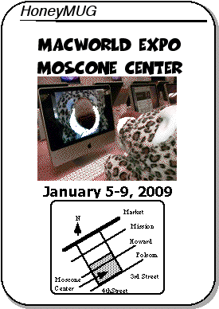
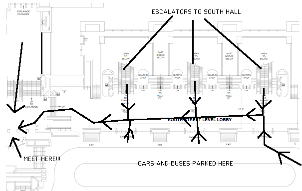

MacWorld Expo 2009 Meeting Notice

2008 MUG / Apple highlights
Mike, Tracy, Dick, and Alex attended MWSF 2008, where
Apple introduced the MacBook Air - "the worlds
thinnest notebook". Apple also announced iTunes movie
rentals and an update to AppleTV, in an attempt to
stay ahead of Microsoft on the road to the digital
living room.
Due to Apple's stock runup in 2007, it suffered
greatly as the market and economy continued to absorb
the bad news of the housing and credit crises. From a
high of $200 near Macworld Expo 2008, the stock sank
as low as $90 during the October market collapse.
Apple introduced the iPhone 3G (twice the speed at
half the price) one year after the first iPhone hit
the streets. Demand was much higher for the iPhone 3G
due to its worldwide release - Apple has sold over 10
million iPhone 3Gs and is poised to become the best
selling smartphone in the world by years' end. News
on the Mac side suffred somewhat this year as Apple
continued to focus on the iPhone product line - an
October Apple event introduced new laptops.
The ASACMUG web site was redesigned to account for
the closure of the ASACMUG clubhouse at Yahoo!
Groups. A new clubhouse forum was setup on a
dedicated server but the only ones who signed up were
Alex and a few crickets.
ASACMUG members buying Apple products:
- iPod Touch - Alex
The End
Many times over the past 15 years, we have speculated the future of Apple and the Macintosh platform. Some years (1997 comes to mind) seemed to presage the end of Macworld Expo, but the incredible optimism of Macintosh users and Apple kept the platform alive. Today, Apple is a premier computer and media company - its survival for at least the next few years seems assured. However, one cannot say the same about ASACMUG.ASACMUG was started in 1988 by a few dedicated employees (Kevin, Mike, Tracy, and Russell); the first meeting was held on November 15, 1988. I joined in 1990 as a regular member. Until 1995, we gained many members as the Mac mindshare within the company grew. However, soon after that, the company standardized on the Wintel platform and ASACMUG lost influence and members via attrition and neglect.
By 2001, almost all of the standard Mac User Group benefits we had built up had disappeared - the software library, bulletin board, MUG discounts, visits by Apple representatives, and the newsletter. A core group of members kept the lunchtime meetings and information exchange about all things Apple. I maintained the online presence, but it was only updated annually with a Macworld Expo meeting notice and a short summary of the events of the year. After leaving the company in 2006, I was no longer part of the user group although I was able to post the 2008 and 2009 meeting notices.
This month marks the 20th anniversary of the first ASACMUG meeting and the 10th ASACMUG annual meeting notice -- there will be no further updates to this site. I will keep the site up as a historical archive and reminder of ASACMUG. Even though it was not successful in keeping Macs on the corporate desktop, it did what a MUG should do - provide support and information to its members. Should the group be revived in the future, I will transfer over all the contents of this website.
Until then, I can be contacted via email, telephone, my blog, social networks, Macworld Expos, and in person.
Alex
The Final Macworld Expo Meeting
We will be having our last official get-together at Macworld. The lunch meetings will occur during show hours and dinner schedules will be arranged during lunch for that day. All future Macworld Expo get-togethers will be arranged via private email and phone calls.The meeting times are
* January 6, 2009 between 12:30-12:45pm (early bird meeting - optional)
* January 7, 2009 between 12:30-12:45pm
* January 8, 2009 between 12:30-12:45pm
* January 9, 2009 between 12:30-12:45pm (optional)
If you get lost, give either of us a call:
Alex Morando seven-one-four--four-eight-eight--fifty-four-ninety-three
Mike Quan three-one-zero--four-six-three-twenty-seven-oh-eight
The meeting location is marked with a yellow circle and will be moved inside (opposite the doors and windows) in the event of rain. For reference, the OLD meeting location is noted by a black circle.

